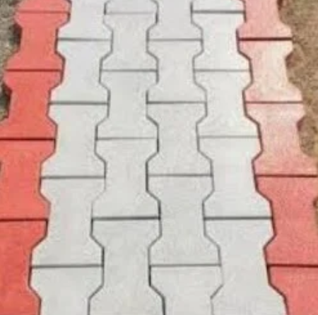
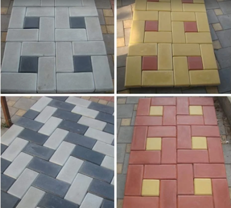
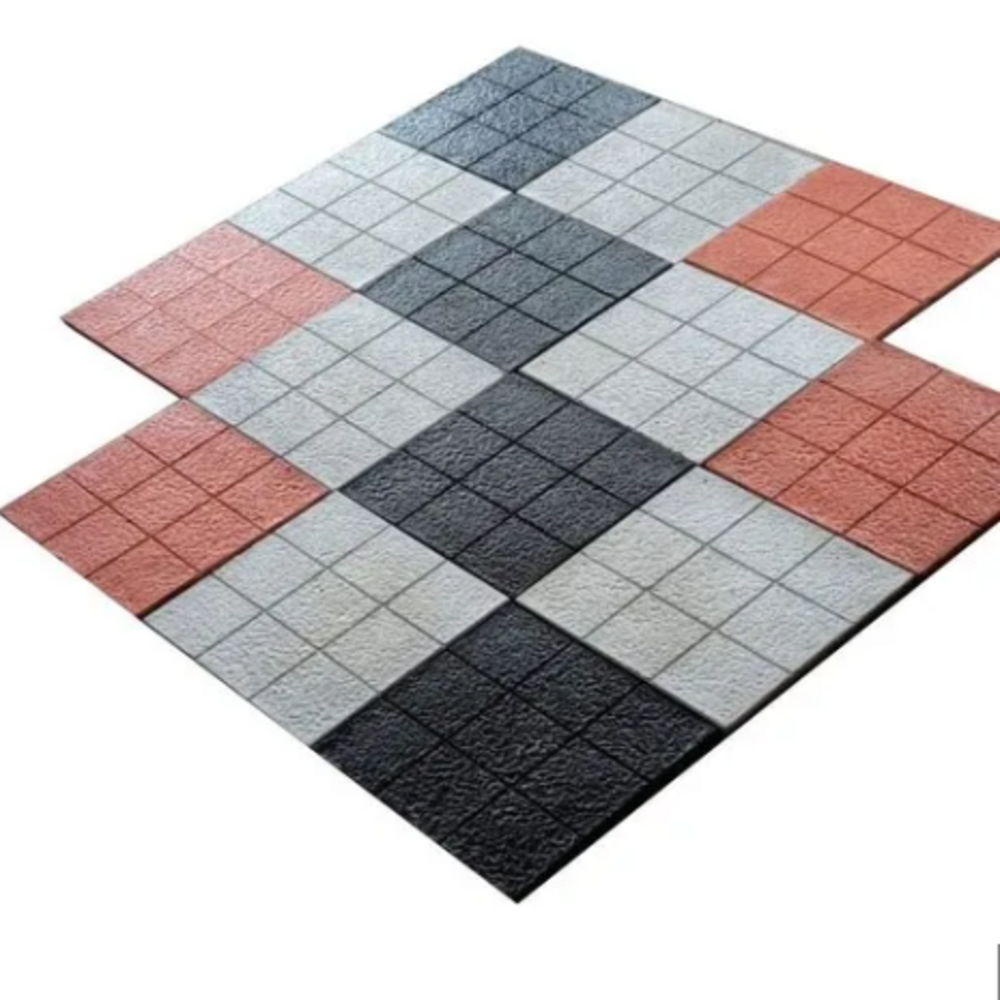

Interlocking Paver Blocks & Concrete Tiles
Manufacturer of paver blocks, interlocking tiles and chequered tiles for parking, pathways, roads and commercial projects in Panipat, Karnal and nearby areas.
Manufacturers & Infrastructure Development Contractors
Manufacturer & supplier of interlocking paver blocks and paving tiles for roads, parking, factories, colonies and commercial projects. Supply across Panipat, Karnal, Samalkha, Sonipat, Kurukshetra, Delhi, Shamli and Muzaffarnagar.
We are R K Paver Blocks & Cement Products. We manufacture interlocking paver blocks and paving tiles for residential, commercial and industrial use. Common applications include parking areas, walkways, streets, factory yards and landscaping.
For project supply in Panipat, Karnal, Samalkha, Sonipat, Kurukshetra, Delhi, Shamli and Muzaffarnagar, contact us for rates, thickness, colors and availability.



We supply interlocking paver blocks and paving tiles in:
Also explore: Readymade Precast Boundary Wall, Kerb Stones, RCC Trench Covers, RCC Drain Covers & Saucer Drains, Cement Concrete Cover Blocks.
View all Precast Cement Products
We manufacture 40 mm, 60 mm and 80 mm interlocking paver blocks. 40 mm is used for light pedestrian areas, 60 mm for parking areas and residential driveways, and 80 mm for heavy duty industrial use.
The terms paver blocks, interlocking tiles and concrete paving tiles are commonly used interchangeably for precast cement blocks used in paving applications.
Yes. We manufacture chequered concrete tiles suitable for footpaths, terraces and commercial paving areas.
We supply interlocking paver blocks and concrete tiles across Panipat, Karnal, Samalkha, Sonipat, Kurukshetra, Delhi, Shamli and Muzaffarnagar.
View all Precast Cement Products
Call: 9215715001
Email: rajendergoel@rkpaverblocks.in
WhatsApp: Click to WhatsApp